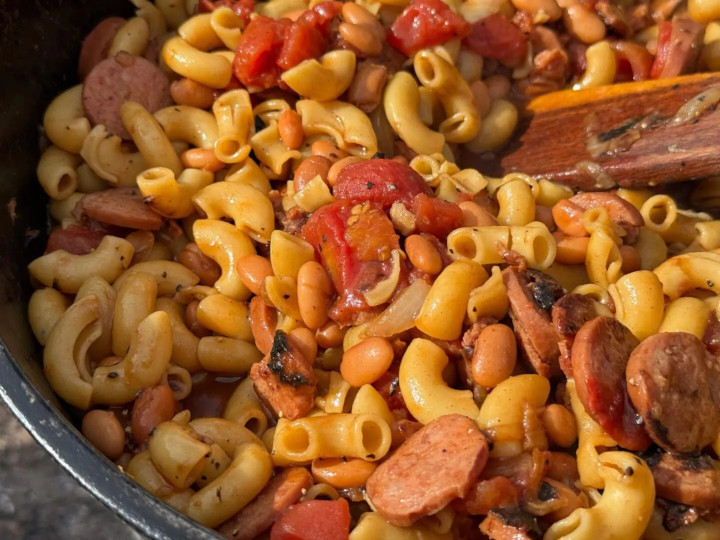

Hoover Stew

Description
Hoover Stew is a recipe that dates back to the Great Depression.
It combines cheap pantry staples like beans, hot dogs, macaroni, and canned tomatoes to
make a hearty, but inexpensive meal.
My version subs out the hot dogs for a good jalapeno sausage, and adds some extra
goodies like bacon and jalapenos for extra flavor, while still keeping the cost to about
$1.20/serving.
Makes aprox. 10 servings.
Ingredients
- Pasta, such as elbow macaronis. 14-16 oz
- Pork & Beef Jalapeno Smoked Sausage, 12-14 oz, sliced into chips
- Bacon, 1/2 lb, sliced small
- 1 Yellow or White Onion, diced
- 2 x 14.5 oz cans Diced tomatoes w/ chiles
- 2 x 15.5 oz cans Pinto Beans w/ Jalapenos & Bacon Bits
- 2-3 Jalapenos, diced. Optional: Remove stems & seeds to reduce heat
- Seasonings to taste, such as
- Garlic powder
- Red Pepper flakes
- Cayenne
- Smoked Paprika
- Oregano
- Thyme
- Worcestershire Sauce
- Liquid Smoke
- Hot sauce
- Pepper Jack cheese, shredded
- Salt & Pepper to taste
Steps
-
Saute the bacon in a large dutch oven. In a separate pot, boil the pasta to
about 90% completion. Drain the pasta and toss with butter, salt, and pepper.
Set aside.
- Fry the sliced sausage in a separate pan until browned on both sides.
-
When the bacon has rendered, add the diced onion to the dutch oven. Saute
the onion with the bacon until transluscent for a firmer bite, or fully
caramelized for a sweeter flavor.
-
Add the canned tomatoes. Use the liquid to deglaze the dutch oven. Add in
the beans, jalapenos, and seasonings. Mix together.
- Add in the sausage and pasta. Stir to mix.
-
Cover and simmer over low heat for 15-20 minutes, stirring occasionally.
- Add salt & pepper to taste. Serve topped with shredded cheese.
Home